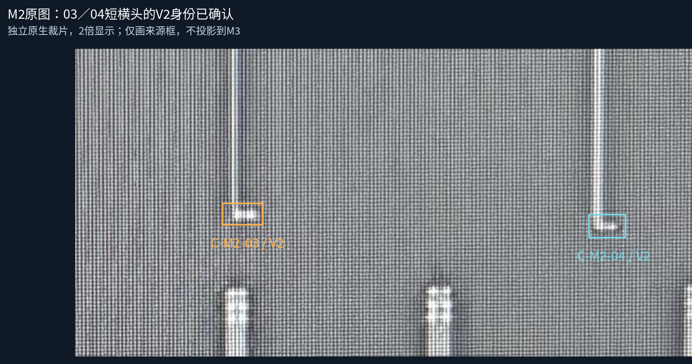
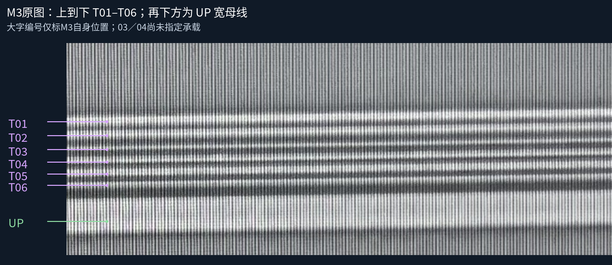
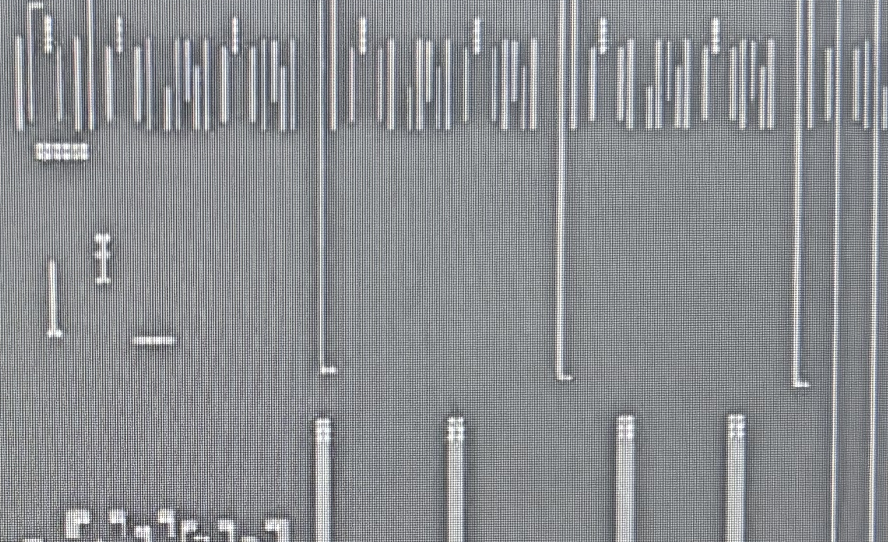

用户裁决原文：均为V2。只确认两处短横头上的孔层身份；孔数、M3载体、连接及设计几何均未批准。旧身份提问不再重复。


03接哪条M3？04接哪条M3？可答T01–T06、UP、其他或仍不清楚。上图只标M3自身位置，不能按两图同坐标直接投影。AI未选定唯一载体。

原模型30金属、5已审接口、34设计候选孔保持。未新增孔组、网络边或未核实跨层投影。浏览器交互未实测，静态资源及脚本检查另记。